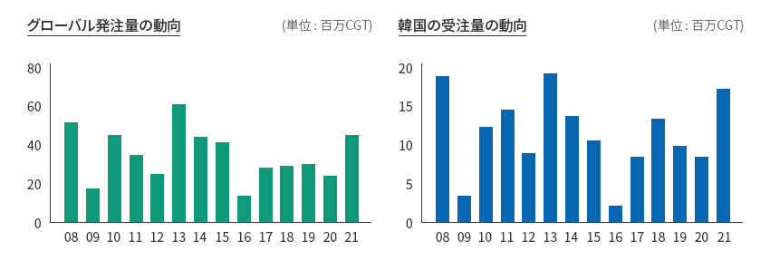
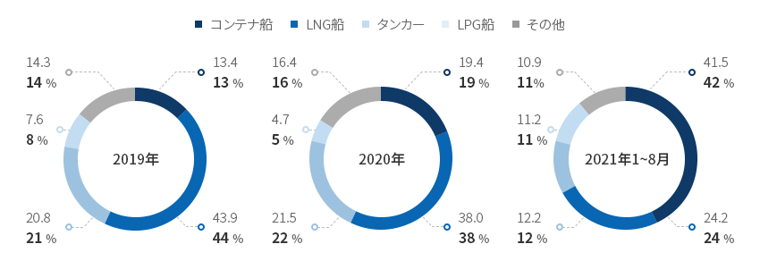
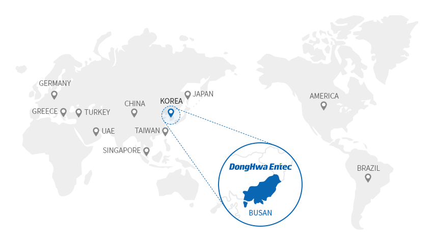
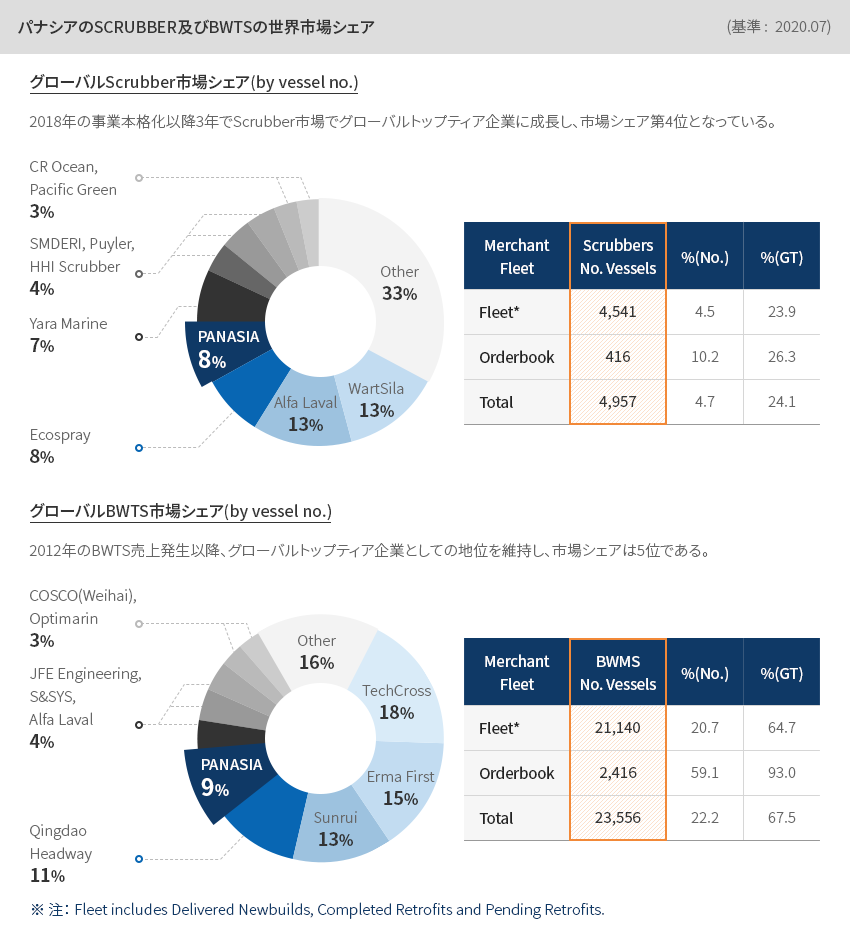
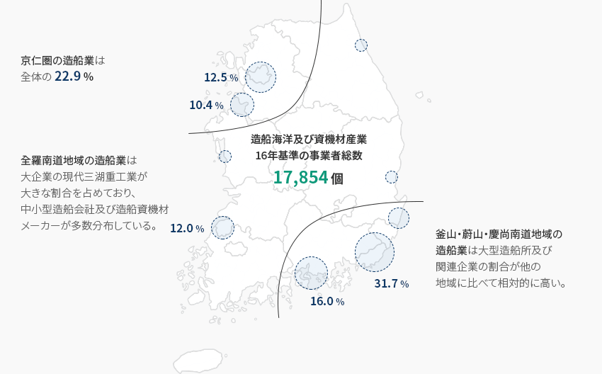
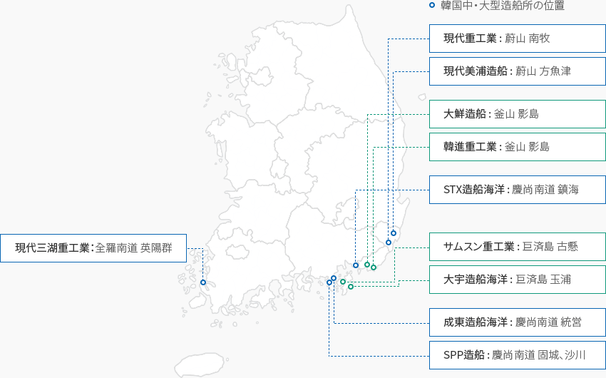

造船海洋
- Home
- Why KOREA
- 産業
- 造船海洋
造船海洋
Shipbuliding & Marine
-
韓国造船・海洋産業の グローバル競争力 コンテンツを閉じる韓国造船・海洋産業の グローバル競争力国際海事機関(IMO)は持続的に環境規制を強化しており、船舶から発生する
大気汚染物質と温室効果ガスの低減に向けた基準が強化され、既存の船舶燃料のクリーン化が進められている。
エネルギーパラダイムの変化と船舶のスマート化により、全世界の造船及び資機材業界はLNG、水素、アンモニア、電気など
低炭素または脱炭素燃料を基盤とする船舶に対する技術開発を急いでいる。また、発展する
ICT技術に基づいて船舶のスマート化なども同時に進めている。グローバル競争力を身につけるために韓国の造船・資機材メーカーは以前から産業製品及び技術の
高付加価値化、環境配慮型及びスマート化に集中してきた。高付加価値/環境配慮型船舶で技術競争力を備えた韓国の造船所の受注量は8年ぶりに最高値を達成した。
。‘21年の船舶受注量は’20年同期比112%増加した1,744万CGTとなった。
このような受注実績は同期間基準で2013年(1,844万CGT)以降8年ぶりの最高値である。「グローバル発注量及び韓国造船所の受注量」グローバル発注量の動向 (単位 : 百万CGT)韓国の受注量の動向 (単位 : 百万CGT) ※ 注 : 年間基準(2022年は1月2日)
※ 注 : 年間基準(2022年は1月2日)
※ 資料 : Clarksons -
韓国造成所の受注量、2008年以降最高幅に増加 コンテンツを開く韓国造成所の受注量、 2008年以降最高幅に増加韓国の船種別受注割合をみるとコンテナ船、LNG船、タンカーの順である。 海上運賃の急騰、グローバル取扱量の増加などによ
るグローバルコンテナ船の発注増加の影響でコンテナ船が最も高い数値となった(41.5％、‘21年1~8月基準)。
一方、2位は24.2%のLNG船である。これは韓国が高度な技術競争力に基づいて圧倒的な受注シェアを
占めている分野でIMOの海洋環境規制の強化などにより、世界的にLNG船の発注が増加したことによるものと思われる。「韓国の船種別受注の割合及び増加率」(単位 : CGT)韓国の船種別受注の割合及び増加率 船種, 年 船種 2019年 2020年 2021年 1~8月 割合 増加率 割合 増加率 割合 増加率 コンテナ船 13.4 -43.4 19.4 44.9 41.5 114.0 LNG船 43.9 -1.0 38.0 -13.4 24.2 -36.4 タンカー 20.8 20.9 21.5 3.7 12.2 -43.3 LNG船 7.6 216.0 4.7 -38.6 11.2 138.4 その他 14.3 15.3 16.4 14.4 10.9 -33.4
韓国の船種別受注の割合及び増加率 船種, 年 船種 2019年 2020年 2021年 1~8月 割合 増加率 割合 増加率 割合 増加率 コンテナ船 13.4 -43.4 19.4 44.9 41.5 114.0 LNG船 43.9 -1.0 38.0 -13.4 24.2 -36.4 タンカー 20.8 20.9 21.5 3.7 12.2 -43.3 LPG船 7.6 216.0 4.7 -38.6 11.2 138.4 その他 14.3 15.3 16.4 14.4 10.9 -33.4 ※ 注 : 前年(同期)比増加率
※ 資料 : Clarksons -
グローバル企業の韓国進出 主要事例 コンテンツを開くグローバル企業の韓国進出 主要事例
 ドンファ・エヌテック、熱エネルギー交換技術を持つ「ワールドクラスの企業」(株)ドンファ・エヌテックは1980年に設立され、船舶用熱交換器の修理からスタートして
ドンファ・エヌテック、熱エネルギー交換技術を持つ「ワールドクラスの企業」(株)ドンファ・エヌテックは1980年に設立され、船舶用熱交換器の修理からスタートして
今や船舶用熱交換器分野で最高水準の製品を供給しており、発電・プラント産業においても
熱交換器専門企業として位置づけられている。特に、LNG運搬船、ガス燃料船、LNG‐FSRU(浮体式LNG貯蔵再ガス化設備)を
はじめとする超低温用熱交換器に特化した世界最高水準の技術力を持つ造船資機材の中堅企業である。ドンファ・エヌテックは他の中堅企業にはみられない大規模研究所を設立し、エネルギー及び環境分野で
独自の技術力を確保するために多くの投資をしている。‘21年8月に試運転に入った韓国ガス公社の
「韓国型天然ガス液化工程(KSMR)実証設備」の中核資機材であるコールドボックスを開発し、主要造船所に供給して現在試運転中である。 パナシア(PANASIA)、環境配慮型「硫黄酸化物低減装置(Scrubber)」の世界市場シェア第4位(株)パナシアは、水質、大気環境及び新再生可能エネルギーの供給設備事業を行うグローバル環境配慮型エネルギー設備メーカーである。
パナシア(PANASIA)、環境配慮型「硫黄酸化物低減装置(Scrubber)」の世界市場シェア第4位(株)パナシアは、水質、大気環境及び新再生可能エネルギーの供給設備事業を行うグローバル環境配慮型エネルギー設備メーカーである。
ビジネスの初期には主にバラスト水位制御計測装置(TLGS)を製造していたが、船舶に対する国際環境規制の強化に
備え、2004年にバラスト水処理システム(BWTS)の開発に参入したことで環境配慮型船舶部品メーカーに生まれ変わった。
パナシアのバラスト水処理システムの「GloEn-Patrol」は100％物理的処理方式のフィルターろ過処理の過程と
紫外線殺菌技術を利用しており、最も環境に優しい安全な装置と評価される。また、パナシアは国際海事機関(IMO)が大気環境保護のために船舶用硫黄含有量を制限する
「IMO2020」の制定に備え、韓国で初めて船舶用環境配慮型硫黄酸化物低減装置を開発した。
主要品目に関する国内外の約250の特許を保有しており、国内技術で開発完了した硫黄酸化物低減装置は
市場シェア世界トップとなっている。パナシアはグローバル市場に本格的に進出するために日本、中国、オランダに
3つの海外法人と43の海外ネットワークを有する企業である。「パナシアのSCRUBBER及びBWTSの世界市場シェア」 (基準: 2020.07)グローバルScrubber市場シェア(by vessel no.)2018年の事業本格化以降3年でScrubber市場でグローバルトップティア企業に成長し、市場シェア第4位となっている。
- PANASIA - 8%
- Other - 33%
- WartSila - 13%
- Alfa Laval - 13%
- Ecospray - 8%
- Yara Marine - 7%
- Yara Marine - 7%
- CR Ocean, Pacific Green - 3%
グローバルScrubber市場シェア Merchant Fleet Scrubbers No. Vessels %(No.) %(GT) Fleet* 4,541 4.5 23.9 Orderbook 416 10.2 26.3 Total 4,957 4.7 24.1 グローバルBWTS市場シェア (by vessel no.)2012年のBWTS売上発生以降、グローバルトップティア企業としての地位を維持し、市場シェアは5位である。
- PANASIA - 9%
- TechCross - 18%
- Other - 16%
- Erma First - 15%
- Sunrui - 13%
- Qingdao Headway - 11%
- Qingdao Headway - 11%
- COSCO(Weihai), Optimarin - 3%
グローバルBWTS市場シェア Merchant Fleet Scrubbers No. Vessels %(No.) %(GT) Fleet* 21,140 20.7 64.7 Orderbook 2,416 59.1 93.0 Total 23,556 22.2 67.5 ※ 注： Fleet includes Delivered Newbuilds, Completed Retrofits and Pending Retrofits.
-
造船及び資機材産業の回復、造船業に経済再飛躍のけん引役を期待 コンテンツを開く造船及び資機材産業の回復、 造船業に経済再飛躍のけん引役を期待グローバル金融危機以降、韓国景気の急激な鈍化は最大主力産業の一つである造船及び資機材産業の不調によ
るところが大きい。最大主力産業である東南圏の造船及び資機材産業の地域経済成長への平均貢献度は2001年~08年の間に
0.9％pにまで上っていたが、2011年~19年にはマイナス(‐0.4％p)となり、成長に貢献できていなかった。しかし、造船業の業況が回復のチャンスを迎え、雇用、付加価値の創出など直接的な波及効果以外にも、鉄鋼、化学、金属など
川上産業の改善にプラスの影響を及ぼしている。特に政府が積極的な支援政策を発表したことで造船及び資機材の業況の
回復スピードはより速くなっている。最近政府は「K造船再跳躍戦略」の発表を通じて世界的な造船強国の地位を守っていくという
計画を具体化し、積極的に支援している。最近の国際社会の海運分野への環境規制強化で従来の化石燃料船舶から脱・低炭素燃料を使用する環境配慮型船舶への
パラダイムの変化が予測される。そこで、パラダイムの変化が今後未来市場の行方を決めると判断した政府は、
「環境配慮型船舶の開発及び普及促進に関する法律」(略して環境配慮型船舶法)を制定(‘18.12)し、施行(’20.1)中である。
また、中長期戦略を設けるための基本計画である「韓国型環境配慮型船舶(Greenship-K)普及施行計画(‘20‐’30)」を策定し、
環境配慮型船舶の開発及び普及を奨励している。「K造船再跳躍戦略」K造船再跳躍戦略 名称, 内容 名称 内容 K造船再跳躍戦略1)
(‘21.9)- 受注競争力にふさわしい生産能力の確保
- エコ・スマート化をリード
- 造船産業生態系の競争力の強化
※ 注: 1) 2022年造船従事者8,000人養成、2030年生産性30％向上、
環境配慮型・自動運航船舶グローバル1位維持、健全な造船産業生態系の構築を目標としている。
※ 資料： 産業通商資源部報道資料(‘21年4月4日) -
韓国の造船海洋及び資機材の 主要立地情報 コンテンツを開く韓国の造船海洋及び資機材の 主要立地情報造船海洋関連企業は主に東南圏(釜山・蔚山・慶尚南道)と首都圏の一部に集中している。特に、東南圏には78.2％の造船海洋資機材メーカーが分布しており、造船産業にとって
重要な位置を占めていることが分かる。それに、造船及び資機材産業関連クラスターが形成されており、
活発なネットワークを確保することができる地域だ。造船海洋及び資機材産業16年基準の事業者総数17,854個京仁圏の造船業は全体の22.9％全羅南道地域の造船業は大企業の現代三湖重工業が大きな割合を占めており、中小型造船会社及び造船資機材メーカーが多数分布している。釜山・蔚山・慶尚南道地域の造船業は大型造船所及び関連企業の割合が他の地域に比べて相対的に高い。 ※ 資料 : 「新海洋都市造成の必要性研究」、KMI(韓国海洋水産開発院)、2019年1月
※ 資料 : 「新海洋都市造成の必要性研究」、KMI(韓国海洋水産開発院)、2019年1月
※ 資料協力 : 韓国海洋大学「韓国の中・大型造成所の位置」韓国の中・大型造船所はほとんど慶尚道に位置しており、現代三湖重工業のみ全羅道に位置しています。韓国中・大型造船所の位置- 現代重工業 : 蔚山 南牧
- 現代美浦造船: 蔚山 方魚津
- 大鮮造船 : 釜山 影島
- 韓進重工業 : 釜山 影島
- STX造船海洋: 慶尚南道 鎮海
- サムスン重工業 : 巨済島 古懸
- 大宇造船海洋: 巨済島 玉浦
- 成東造船海洋: 慶尚南道 統営
- SPP造船 : 慶尚南道 固城、沙川
- 現代三湖重工業：全羅南道 英陽群
「地域別造船海洋資機材メーカーの分布(ほとんど釜山、蔚山、慶尚南道に集中)」地域別造船海洋資機材メーカーの分布 地域名, 企業数, 割合(%), 従業員数, 売上高(百万ウォン) 地域名 企業数 割合(%) 従業員数 割合(%) 売上高(百万ウォン) 割合(%) 釜山広域市 346 57.38 19,185 51.57 7,904,104 51.3 蔚山広域市 65 10.78 2,845 7.65 929,859 6.03 慶尚南道 143 23.71 10,512 28.26 4,332,419 28.11 首都圏 26 4.3 2,216 5.95 931,999 6.05 その他 23 3.83 2,444 6.57 1,312,219 8.51 合計 603 100 37,202 100 15,410,600 100 ※ 資料 : 韓国輸出入銀行(ソ・ビョンス議員、国会報告、21年2月23日）


Invest KOREA
造船/海洋PM
キム・ミンジョン
基幹産業誘致チーム
T.+82-2-3460-3239
おすすめの立地情報
産業団地情報
[Gyeongsangnam-do Geoje City] Hannae Shipbuilding Specialized Agricultural
Industrial Complex
Click [Go to Detailed Information] to go to the relevant information screen of
Smart K-Factory service of Industrial Complex Corporation.
-
Complex nameHannae Shipbuilding Specialized Agricultural Industrial Complex
-
Initial designation date2007.08.13
-
Designated area(m2)277,868
-
ManagementGyeongsangnam-do Geoje City
-
Nearby RailwayBusan Station
-
Distance from station(km)59
-
Nearby AirportGimhae International Airport
-
Distance from airport(km)57
-
Industrial water Supply capacity(ton/day)-
-
Affiliation local governmentGyeongsangnam-do Geoje City
-
Population246,402
産業団地情報
[Gyeongsangnam-do Tongyeong City] Anjeong National Industrial
Complex
Click [Go to Detailed Information] to go to the relevant information screen of
Smart K-Factory service of Industrial Complex Corporation.
-
Complex nameAnjeong National Industrial Complex
-
Initial designation date1974.04.01
-
Designated area(m2)3,866,224
-
ManagementKorea Industrial Complex Corporation
-
Nearby RailwayJinju Station
-
Distance from station(km)46
-
Nearby AirportSacheon Airport
-
Distance from airport(km)45
-
Industrial water Supply capacity(ton/day)6500(㎥/day)
-
Affiliation local governmentGyeongsangnam-do Tongyeong City
-
Population129,226
産業団地情報
[Jeollanam-do Mokpo City] Daeyang General Industrial Complex
Click [Go to Detailed Information] to go to the relevant information screen of
Smart K-Factory service of Industrial Complex Corporation.
-
Complex nameDaeyang General Industrial Complex
-
Initial designation date2009.02.05
-
Designated area(m2)1,545,007
-
ManagementJeollanam-do Mokpo City
-
Nearby RailwayMokpo Station
-
Distance from station(km)6
-
Nearby AirportMuan International Airport
-
Distance from airport(km)34
-
Industrial water Supply capacity(ton/day)5,138(㎥/day)
-
Affiliation local governmentJeollanam-do Mokpo City
-
Population226,875
産業団地情報
[Gyeongsangnam-do Changwon City] Jinbuk Agricultural Industrial
Complex
Click [Go to Detailed Information] to go to the relevant information screen of
Smart K-Factory service of Industrial Complex Corporation.
-
Complex nameJinbuk Agricultural Industrial Complex
-
Initial designation date1989.12.15
-
Designated area(m2)133,170
-
ManagementGyeongsangnam-do Changwon City
-
Nearby RailwayMasan Station
-
Distance from station(km)22
-
Nearby AirportSacheon Airport
-
Distance from airport(km)51
-
Industrial water Supply capacity(ton/day)330(㎥/day)
-
Affiliation local governmentGyeongsangnam-do Changwon City
-
Population1,038,677
産業団地情報
[Jeollanam-do Suncheon City] Haeryong Industrial Complex (Gwangyang Bay Area
Free Economic Zone)
Click [Go to Detailed Information] to go to the relevant information screen of
Smart K-Factory service of Industrial Complex Corporation.
-
Complex nameHaeryong Industrial Complex (Gwangyang Bay Area Free Economic Zone)
-
Initial designation date1998.04.22
-
Designated area(m2)1,592,808
-
ManagementJeollanam-do Suncheon City, Gwangyang bay area Free Economic Zone Authority
-
Nearby RailwayYulchon Station
-
Distance from station(km)5
-
Nearby AirportYeosu Airport
-
Distance from airport(km)11
-
Industrial water Supply capacity(ton/day)4,614(㎥/day)
-
Affiliation local governmentJeollanam-do Suncheon City
-
Population281,999
産業団地情報
[Gyeongsangnam-do Geoje City] Obi 2nd General Industrial Complex
Click [Go to Detailed Information] to go to the relevant information screen of
Smart K-Factory service of Industrial Complex Corporation.
-
Complex nameObi 2nd General Industrial Complex
-
Initial designation date2014.09.05
-
Designated area(m2)108,613
-
ManagementGyeongsangnam-do Geoje City
-
Nearby RailwayJinhae Station
-
Distance from station(km)65
-
Nearby AirportGimhae International Airport
-
Distance from airport(km)63
-
Industrial water Supply capacity(ton/day)64(㎥/day)
-
Affiliation local governmentGyeongsangnam-do Geoje City
-
Population246,402